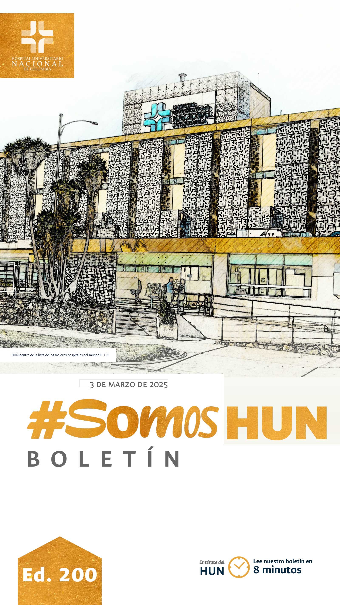
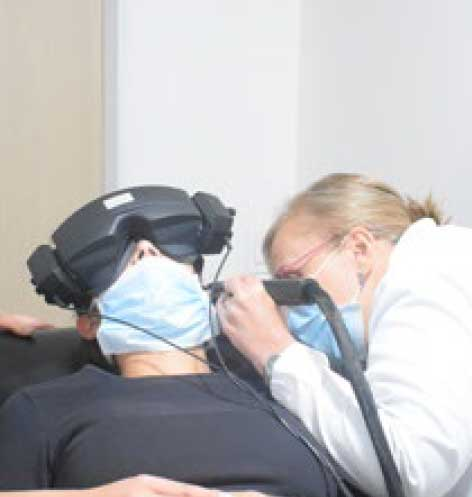
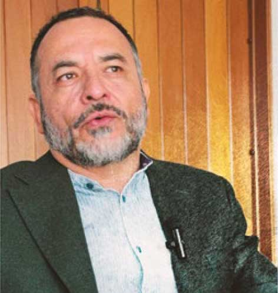
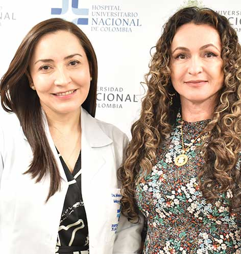
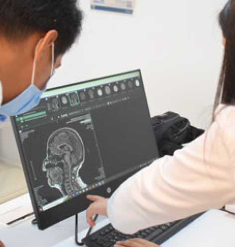

Ver todos los boletinesHUN dentro de la lista de los mejores hospitales del mundo
En un ranking anual que evalúa más de 2400 hospitales del mundo, en 30 países, la revista Newsweek, en colaboración con la firma de datos Statista, incluyó 60 hospitales Colombianos dentro de los mejores del mundo.Leer más

Pérdida auditiva una amenaza
que se puede prevenir
430 millones de personas padecen audición discapacitante en el mundo y requieren rehabilitación. Una cifra que va en aumento gracias al uso inadecuado de las tecnologías, la exposición a ambientes de ruido prolongados y el desarrollo de malos hábitos, en el día mundial de la Audición, presentamos recomendaciones.Leer más

Innovación y aporte social:
Un compromiso de la Facultad de Odontología UNAL al país.
Desde su aparición la odontología ha desafiado los arquetipos en la salud. En épocas medievales el odontólogo era considerado un artesano y la odontología un oficio basado en la habilidad manual y la experiencia empírica que solo podía atender a los reyes y sus descendencias. Con el tiempo y visión altruista, empezaron a atender al pueblo en las plazas, considerando acceso y equidad en salud, como criterios fundamentales para su vocación. Hoy cuando la Facultad de Odontología de la UNAL cumple sus 93 años, hablamos con su Decano para entender como esta ciencia sigue desafiando y retando los modelos de educación e investigación en salud y continua proyectándose con tecnología e innovación al futuro. Leer más

Estándar Clínico Basado en la Evidencia
Prevención, diagnóstico y tratamiento del paciente con lesiones por presión asociadas al cuidado de la salud atendido en el HUN
Desde el lunes 27 y hasta el 30 de Enero recibimos la visita del Hospital de Sarare ESE y sus delegados quienes se referenciaron con nosotros en el Sistema Único de Habilitación en lo que respecta a la UCI, de cara a la apertura de su Unidad de Cuidados Intensivos y la sala de Hemodinamia planeada para febrero.
Leer más

¿Qué tan raras y olvidadas están las enfermedades huérfanas?
Con un poco más de 100.000 pacientes que padecen enfermedades huérfanas, Colombia sigue avanzando en la reducción de las brechas, la mejora del acceso y la inclusión de terapias avanzadas para brindar una mejor calidad de vida a estos pacientes, en medio de un panorama donde cada vez son más raras y huérfanas para quien las padece.Leer más